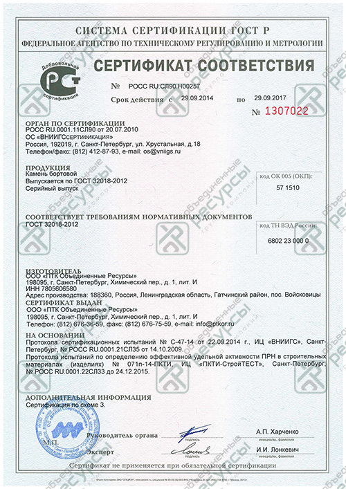

Пн-Пт: 9:30 - 18:00
Сб-Вс: выходной
ГАРАНТИЯСб-Вс: выходной
ЛУЧШЕЙ ЦЕНЫЗАКАЗАТЬ
ОБРАТНЫЙ ЗВОНОКОСТАВИТЬ
ЗАЯВКУ НА МАТЕРИАЛЫ
Поставка материалов
для дорожного строительства
8 812 676-75-59
8 499 550-22-58
Санкт-Петербург, ул. Маршала Говорова, д.35, к.4
Москва, пр. Мира, д.101, оф.501

Бортовой гранитный камень от компании ООО «ПТК Объединенные Ресурсы» – это полнопиленные камни, необходимые для того, чтобы отделять проезжую часть от тротуаров. Они имеют длину 1000 мм, что значительно облегчает их подгонку и установку.
Рассматриваемая продукция от железобетонных конструкций отличается рядом преимуществ:
Использование описываемого материала является финансово выгодным вложением, если учесть его износостойкость.
Актуальную цену на предлагаемые материалы Вы можете узнать, скачав ПРАЙС-ЛИСТ на товары, представленные в разделе "Гранитные изделия"
|
Марка камня по |
Марка камня по |
Класс |
Тип пов-ти |
Чертеж |
Высота, |
Ширина, мм |
Длина, |
Радиус |
Назначение изделия |
|
Камень бортовой 1ГП |
КбртГП1 |
1-ый |
пиленая |
300 |
150 |
1000 |
- |
Для отделения проезжей части |
|
|
Камень бортовой 2ГП |
КбртГП2 |
1-ый |
пиленая |
400 |
180 |
1000 |
- |
Для отделения проезжей части |
|
|
Камень бортовой 3ГП |
КбртГП3 |
1-ый |
пиленая |
600 |
200 |
1000 |
- |
Для отделения проезжей части |
|
|
Камень бортовой 4ГП |
КбртГП4 |
1-ый |
пиленая |
200 |
100 |
1000 |
- |
Для отделения переходных дорожек |
|
|
Камень бортовой 5ГП |
КбртГП5 |
1-ый |
пиленая |
200 |
80 |
1000 |
- |
Для отделения переходных дорожек |
|
|
Камень бортовой ГПВ |
КбртГП6 |
1-ый |
пиленая |
200 |
150 |
1000 |
- |
Для устройства въездов с проезжей |
|
|
Камень бортовой ГК5 |
КбртГП'(5000) |
1-ый |
пиленая |
300 |
150 |
1000 |
5000 |
Для отделения проезжей части улиц, |
| Расшифровка маркировки по ГОСТ 6666-81 | Расшифровка маркировки по ГОСТ 32018-2012 | |||
| Г - материал, из которого изготовлен камень (гранит) | Кбрт - камень бортовой | |||
| П - прямоугольный камень | Г - горная порода | |||
| В - прямоугольный въездной камень | П - пиленая поверхность (прямолинейный) | |||
| К5 - криволинейный камень с радиусом 5 метров | П' - пиленая поверхность (криволинейный) | |||
| 5000 - радиус кривизны, мм | ||||
Для изготовления такого товара, как бортовой камень, гранит используется только привезенный с лучших рудников Скандинавии. Он прошел экологическую и радиационную проверку и полностью соответствует ГОСТ 32018-2012 «Изделия строительно-дорожные из природного камня. Технические условия», вышедшему на смену ГОСТ 6666-81.
Результаты проверки подтверждены сертификатом соответствия № РОСС RU.СЛ90.Н00257, выданным ОС «ВНИИГСсертификация» и имеющий срок действия до 29.09.2017.
Желаете купить гранитный бортовой камень в СПб дешево? Воспользуйтесь предложением компании ООО «ПТК Объединенные Ресурсы». В 2015 году строительные организации приобрели у нас более 100 000 погонных метров различных видов рассматриваемой продукции (ГП1-5, ГПВ, ГК). Эти изделия можно увидеть на более, чем 30 объектах по всей территории России.
Мы работаем напрямую от производителя и предлагаем продукцию по действительно доступным ценам. Поэтому, если желаете гранитный бортовой камень купить по выгодной стоимости, Вы по достоинству оцените наше предложение. К тому же на все товары действует программа «Гарантия лучшей цены».

Наш бордюрный камень по геометрическим размерам соответствует 1-му классу по ГОСТ 32018-2012 и имеет следующие физико-механические свойства:
|
№ |
Наименование показателя |
Ед. |
Требование ГОСТ 32018-2012 |
Фактическое значение |
«Запас» |
Метод испытания |
|
1 |
Водопоглащение |
% |
не более 0,50 |
0,32 |
56% |
ГОСТ 32018-2012 |
|
2 |
Предел прочности при сжатии в сухом состоянии |
МПа |
не менее 80 |
176 |
45% |
ГОСТ 32018-2012 |
|
3 |
Снижение прочности при водонасыщении |
% |
не более 30 |
20 |
30% |
ГОСТ 32018-2012 |
|
4 |
Морозостойкость |
циклы |
не менее 100 |
300 |
200% |
ГОСТ 32018-2012 |
|
5 |
Солестойкость |
% |
не более 5 |
0,02 |
2500% |
ГОСТ 32018-2012 |
|
6 |
Истираемость |
% |
не более 1,0 |
0,3 |
60% |
ГОСТ 32018-2012 |
|
7 |
Сопротивление удару |
см |
не менее 30 |
50 |
60% |
ГОСТ 32018-2012 |
|
8 |
Удельная суммарная эффективная естественных радионуклидов |
Бк/кг |
не более 740 |
136 |
80% |
ГОСТ 32018-2012 |
Примеры применения


{kind=link}
{kind=link}
{kind=link}
{kind=link}
{kind=link}
{kind=link}
{kind=link}